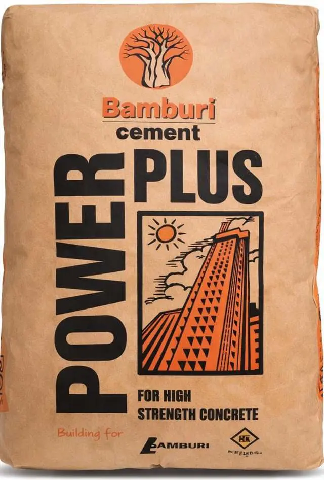

Bamburi PowerPlus is a high-strength Grade 42.5 Ordinary Portland Cement (OPC) designed for medium to large-scale projects. Ideal for high-rise buildings (over 4 floors), columns, beams, and precast manufacturing, it provides early strength development and robust structural integrity. Used in the Sh.20 billion Mwache Multipurpose Dam project.
Bamburi PowerPlus is a high-strength Grade 42.5 Ordinary Portland Cement (OPC) designed for medium to large-scale projects. Ideal for high-rise buildings (over 4 floors), columns, beams, and precast manufacturing, it provides early strength development and robust structural integrity.
Key Features:
Usage & Curing Requirements: Because it is a high-strength OPC, it requires careful concrete mix design and quality control. Proper curing for at least 7 days is essential to prevent cracking and ensure maximum durability. For best results, use clean water and quality-assured aggregates, and avoid overmixing.
We deliver across Kenya to homes, construction sites, contractors, hardware stores and commercial developments.
Bamburi's PowerPlus Cement is a high-strength Grade 42.5 Ordinary Portland Cement (OPC) designed for medium to large-scale projects. Ideal for high-rise buildings (over 4 floors), columns, beams, and precast manufacturing, it provides early strength development and robust structural integrity.
Key Features & Applications:
Speed up projects with POWERPLUS 42.5's high early strength, perfect for quick demoulding.
Achieve stronger concrete with less cement using POWERPLUS 42.5's efficient mix design.
Protect your builds with POWERPLUS 42.5's low alkali, guarding against concrete damage.
Bamburi PowerPlus Cement is ideal for high-strength structural works. Use it for constructing high-strength bridge decks, stabilizing soil for road bases, pouring deep foundations for high-rise buildings, and producing precast concrete beams for dam projects
Competitive pricing for bulk and retail orders. Contact us for large project quotations.
| Quantity | Unit Price (KES) | Total (KES) |
|---|---|---|
| 1 - 50 bags | KSh 950 | KSh 950 - 47,500 |
| 51 - 200 bags | KSh 920 | KSh 46,920 - 184,000 |
| 201 - 500 bags | KSh 890 | KSh 178,890 - 445,000 |
| 500+ bags | KSh 860 | Call for quote |
Prices subject to change. Contact us for the latest bulk pricing and delivery charges.
For optimal results with Bamburi PowerPlus Cement, proper surface preparation is crucial. Ensure the substrate is stable and leveled. Remove any loose materials or existing weak concrete. Eliminate contaminants like dust or grease using a wire brush or pressure wash. This prepares the surface for a strong bond, ensuring durable and lasting structural performance.
Boost your build with POWERPLUS 42.5
Mixing POWERPLUS 42.5 correctly is key to its high strength and efficiency in concrete designs. Use clean water and quality aggregates, measured accurately with a wheelbarrow or bucket. Blend thoroughly until uniform, adding minimal water to maintain strength and avoid alkali reactions, ensuring a robust mix for precast or large-scale work.
Applying POWERPLUS 42.5 effectively maximizes its rapid strength for slabs, beams, or precast works. Spread evenly, compact firmly, and finish smoothly to leverage its high early strength. Skilled users should follow mix designs and cure well to ensure durability and performance, ideal for high-strength concrete in large or technical projects.
Safety and care optimize POWERPLUS 42.5's performance. Wear protective gear to prevent irritation, store cement dry on pallets, and use it first-in, first-out. Cure for 7 days to avoid cracks, use minimal water, and dispose of waste properly. These steps ensure safe handling and maintain its strength and durability for all projects.